EP2 新設定圖：挑圖
第 13 步的檢查點（2026-11-17）。每隻 Flow 畫 4 張（2K），我逐張寫檢查結果、綠框是建議。點圖看大圖。你在對話裡回「矮暴龍 3、三角龍 1、鼩鼱 1」這樣就好；沒選的那隻要整段重寫 prompt 重畫。選定後改名 REF_…、放進參考圖資料夾，再做跟 HERO 的比例圖。
矮暴龍 REF_NANO
第 4 段遠方跟三角龍打架、第 10 段決鬥恐龍化石。要一眼跟 EP1 的青少年暴龍 TEEN 分得出來。
建議第 1 張：第 4 版（拿掉咬痕、只附 REF_TREX 當畫風參考）：第 1 張前肢長、只有兩根大爪（合 2025 研究和暴龍類），暴龍類的頭但比暴龍窄長、牙細密，脖子粗壯、腿細長，背深肚淺沒有條紋。第 3 版附 REF_STRUTHIO 被帶成似鴕龍體型、三根爪，四張都不用。
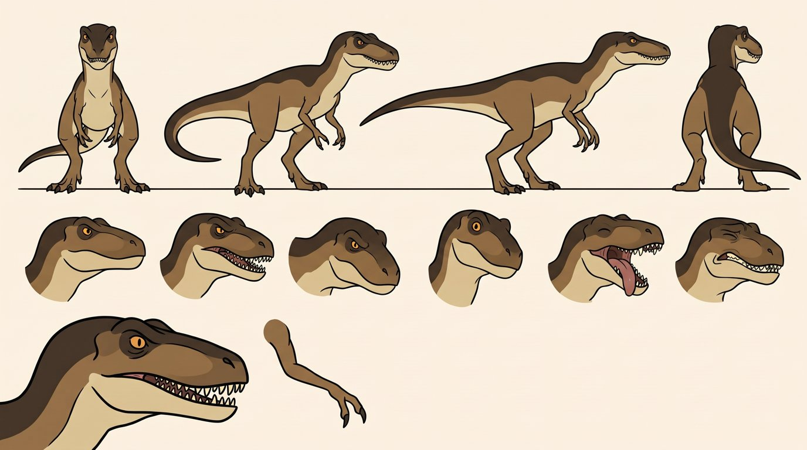
兩根大爪、前肢長；頭、脖子是暴龍類。
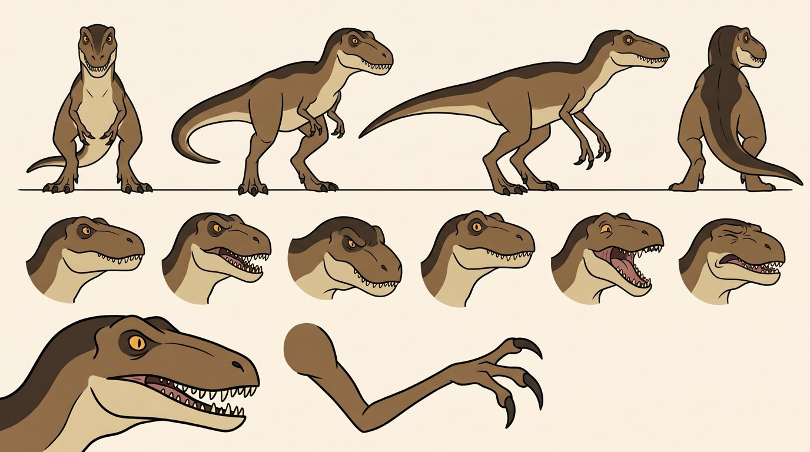
三根爪（暴龍類只有兩根）。
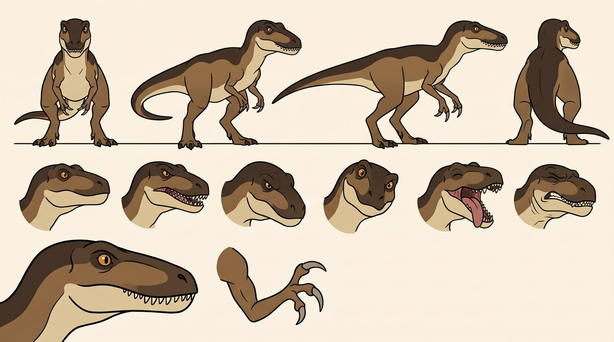
三根爪、前肢偏短。
prompt（中文對照）
做一張 16:9 橫式角色設定圖，畫同一隻成年矮暴龍（Nanotyrannus），用在穿越回恐龍時代的 2D 火柴人動畫。附上的成年暴龍 TREX 只拿來對照畫風；矮暴龍是另一種比較小的暴龍類，要靠體型一眼跟年輕的暴龍分得出來，不是靠鮮豔的顏色。畫風跟附圖完全一樣。固定特徵：成年、精瘦，身長約 5 公尺；頭比暴龍窄長、吻部尖，嘴裡牙齒又細又多；前肢明顯比暴龍長，兩根手指有大爪子；腿又細又長，像短跑選手；尾巴長、伸直保持平衡。顏色是自然的大地色，像現代的大型掠食動物：背和尾巴上方深巧克力棕 #4F3B2B，往側面漸淡成暖棕褐 #9C7A55，肚子和喉嚨淺奶油色 #E2D2B0（背深肚淺）；眼睛琥珀色 #C98A2B；身上沒有條紋、斑點、亮色。比例和顏色不能變。大小：約 5 公尺長、700 公斤，暴龍的十分之一重；不要畫人。版面：第一列四個全身角度；第二列六個頭部表情（警戒、嘶吼、低頭準備撲、好奇歪頭、喘氣、被頂到的痛），不要字；第三列：放大的側臉、一隻前肢的特寫。一致性：每格同一隻，不要多餘的肢體、合併的格子、文字、標籤、logo、浮水印。
參考圖：REF_TREX
三角龍 REF_TRICERA
第 4 段跟矮暴龍打架、第 8 段逃難、第 9 段進山洞、第 10 段化石。
建議第 3 張：第 3 版（拿掉缺角，使用者在 EP2 專案畫）：第 3 張表情剛好 6 個；額角完整；背深肚淺、骨盾同色系；四列版面都對、沒有字。
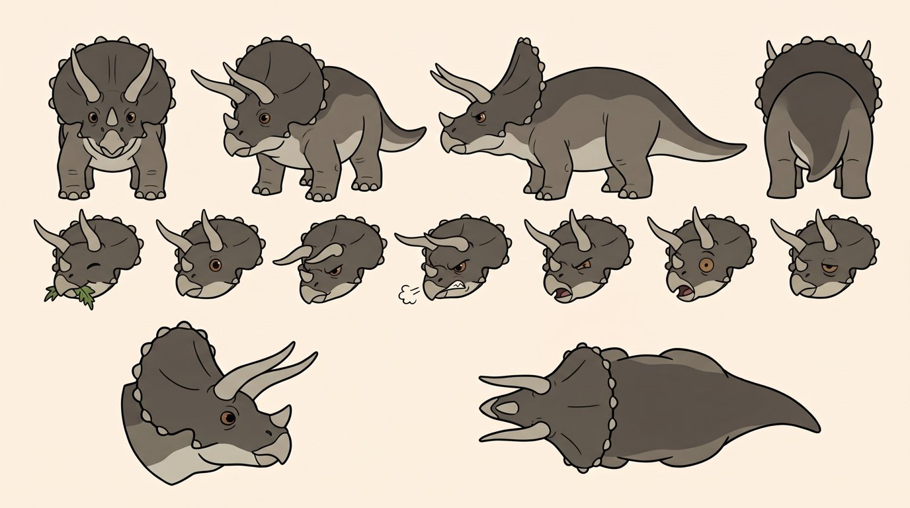
表情 7 個（要 6 個）。
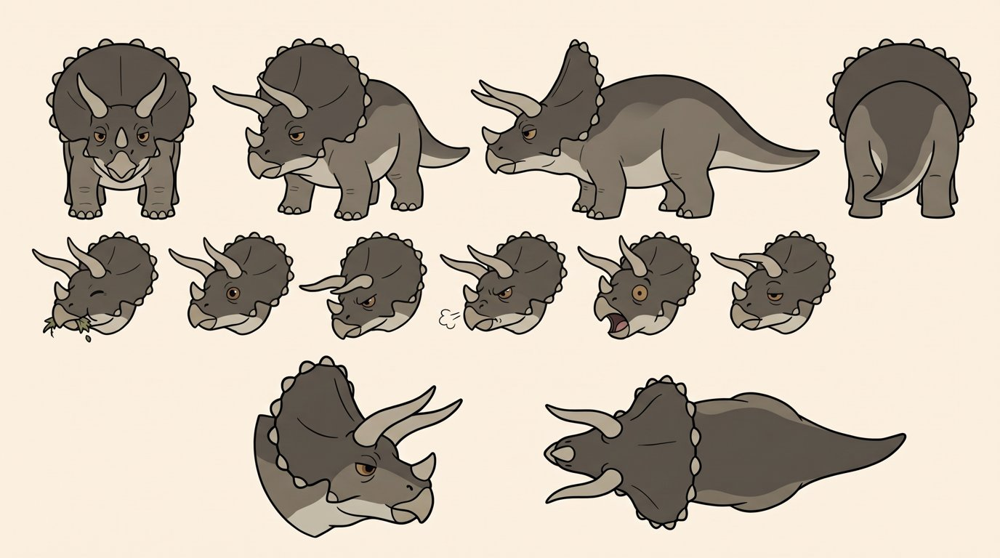
表情 6 個、版面最符合 prompt。
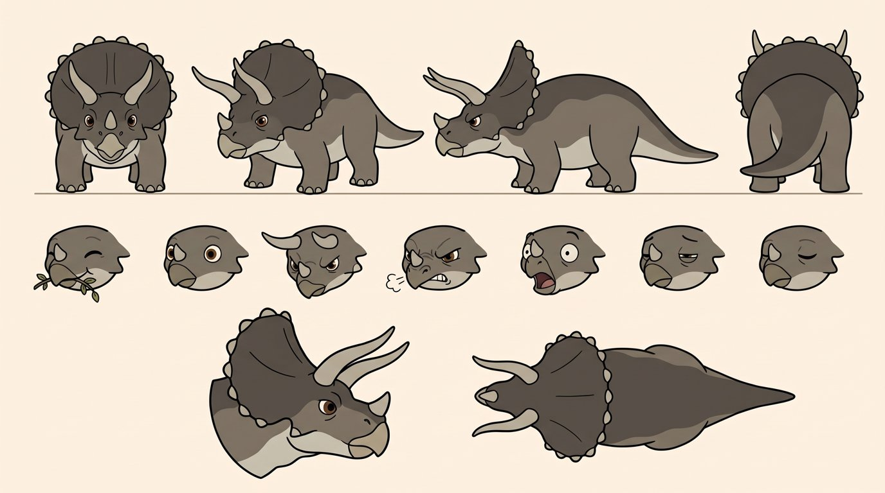
表情 7 個。
prompt（中文對照）
做一張 16:9 橫式角色設定圖，畫同一隻成年三角龍，用在穿越回恐龍時代的 2D 火柴人動畫。附上的甲龍 ANKY 只拿來對照畫風。畫風跟附圖完全一樣。固定特徵：又大又壯、四腳站立的成年三角龍，身長約 9 公尺、跟公車一樣長；頭很大，頭後面一片短而厚、邊緣有一圈小突起的骨盾；額頭兩根長而往前彎的角、鼻子上一根短角；嘴巴是像鸚鵡一樣的喙。顏色是自然的大地色，像現代的犀牛或大象：背、骨盾、尾巴上方深灰褐 #5F574C，往側面漸淡成灰褐 #7E7466，肚子和喉嚨淺灰米色 #CFC6B4（背深肚淺）；角和喙是暗米灰 #B8AE9C；眼睛深棕。骨盾跟身體同色系，邊緣的小突起稍深一點；身上沒有條紋、斑點、紅色或其他亮色。比例和顏色不能變。大小：約 9 公尺長，肩高約 3 公尺、將近成年人的兩倍；不要畫人。版面：第一列四個全身角度；第二列六個頭部表情（平靜吃植物、警戒、低頭用角頂、生氣噴氣、受驚、累了），不要字；第三列：放大的側面頭部、一張從正上方看的骨盾。一致性同上。
參考圖：REF_ANKY
鼩鼱（哺乳類祖先） REF_SHREW
第 8 段鑽進地洞、地洞剖面、探頭；第 10 段「別吃牠」。
建議第 1 張：鼻子最尖長、最像鼩鼱（不像老鼠）；地洞剖面最清楚。耳朵缺口四張都有。小問題：缺口畫在看得到的那隻耳朵（臉朝右時那是左耳），跟 prompt 的「右耳」相反，但只要之後每格一致就好，以挑定的這張為準。
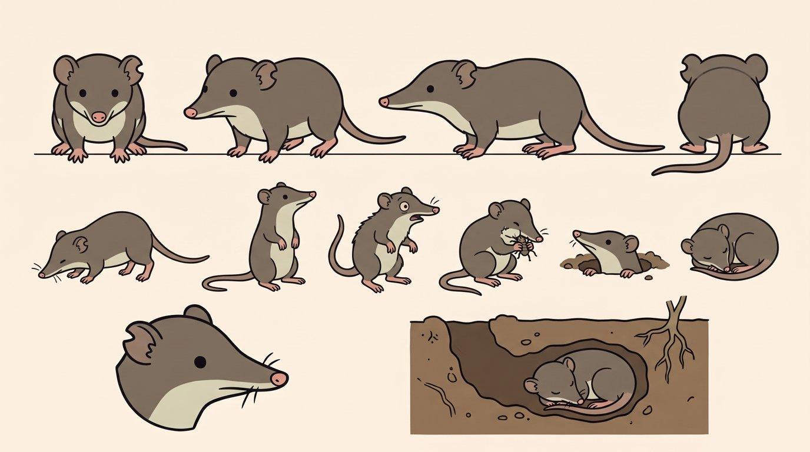
尖鼻、耳朵缺口、6 個動作、地洞剖面都有；版面最清楚。

受驚那格姿勢誇張、跑出格子；地洞剖面底色很暗。
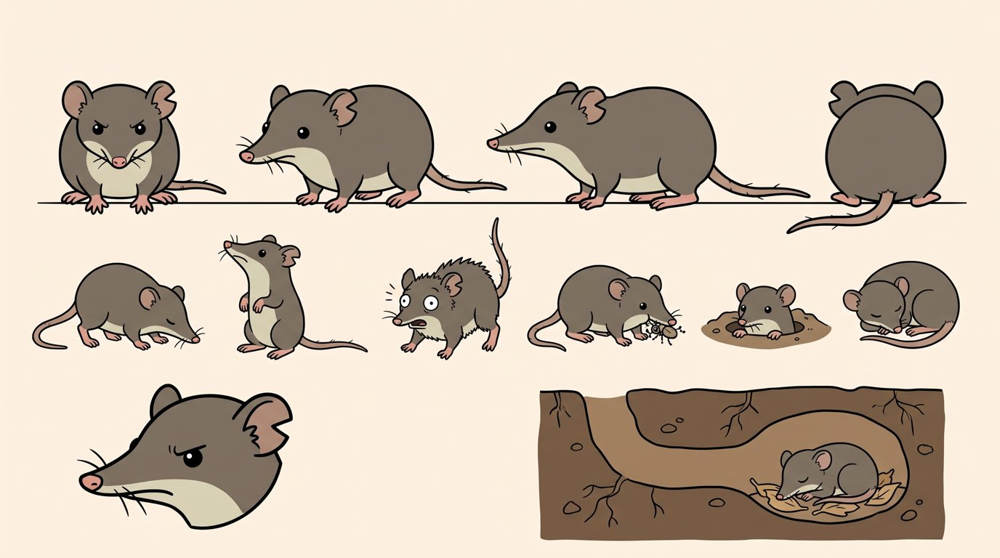
大頭特寫是生氣的表情（prompt 沒要）；缺口在右耳（照 prompt）。

版面完整；鼻子較短、比較像老鼠。
prompt（中文對照）
做一張 16:9 橫式角色設定圖，畫同一隻小小的、像鼩鼱的早期哺乳動物，用在穿越回恐龍時代的 2D 火柴人動畫。附上的甲龍 ANKY 只拿來對照畫風。畫風同 ANKY。固定特徵：老鼠大小，身長約 8 公分（不含尾巴）；尖尖長長、會動的鼻子，小黑豆眼，小圓耳朵，全身短短的毛，細長的尾巴，四隻小腳有爪子會挖土。顏色：灰棕色毛 #7A6652，肚子淺色 #CDBFAE，粉紅鼻尖和腳 #E3A3A0。標記：右耳有一個小缺口。比例、缺口和顏色不能變。大小：只有手掌那麼小；不要畫人。版面：第一列四個全身角度；第二列六個表情（嗅聞、警戒站起來、受驚、嘴裡叼著一隻蟲、從洞口探頭、縮成一團睡覺）；第三列：放大的頭（看得到耳朵缺口），和牠鑽進地洞的剖面（洞裡乾淨，沒有字）。一致性同上。
參考圖：REF_ANKY 2026-11-17 第一次送 Flow 時寫 10 公分（查核 #130：偏大，一般 4～9 公分）；之後改 8 公分。
小行星 REF_ASTEROID
黑板（S02）、天上光點（S04-6、7）、劃過天空（S04-9）、生存指南（S05-2）、地平線亮光。
建議第 4 張：第 4 張本體是陀螺形、有一圈赤道脊，最像 NASA 拍的 Bennu（碳質小行星，查核 #102）；四格夜空由暗到亮、有月亮對照；火球是短火尾、從右上往左下（不是彗星）；黑板粉筆版、撞地球圖示版都有；沒有字。
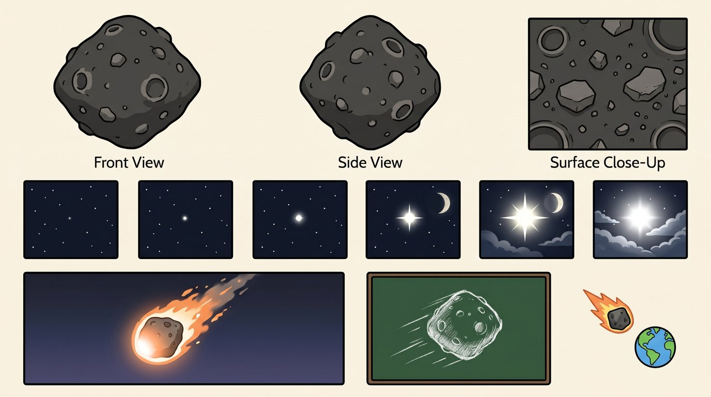
圖上有英文字（Front View 等），不能用。
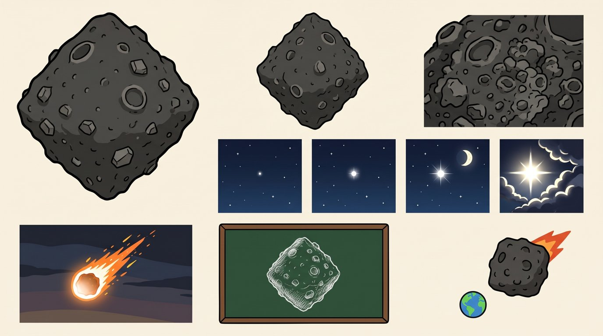
沒有字；本體像一般石頭。
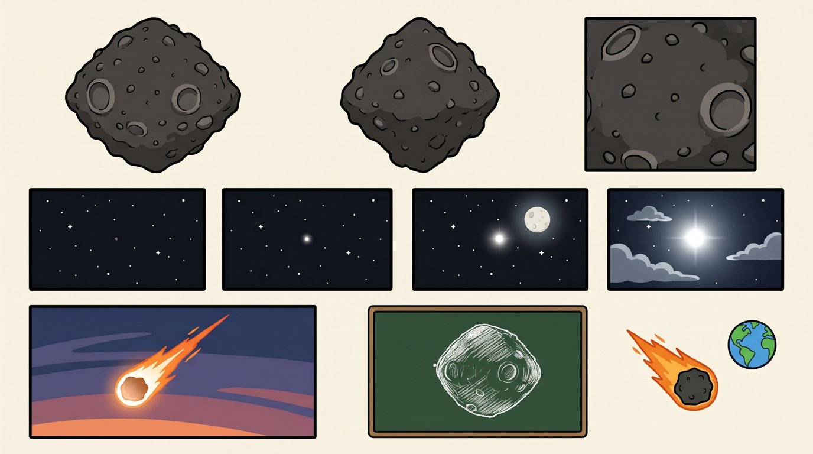
沒有字；本體像一般石頭。
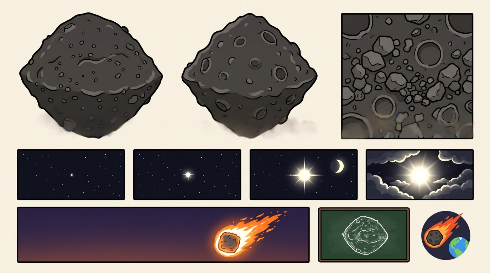
最像 Bennu；全部格子都對。
prompt（中文對照）
做一張 16:9 橫式設定圖，畫同一顆小行星在故事裡的各種樣子，用在 2D 火柴人動畫。附上的照片是真的小行星 Bennu，只參考它的外形；附上的道具設定圖只參考畫風。畫風：扁平 2D 卡通、米白背景、粗黑線、平塗色、不要寫實質感。小行星本體：像陀螺、四角圓圓的鑽石形大石頭，表面坑坑疤疤、布滿大小石塊；深炭灰 #3F3C3A，坑的邊緣淺一點的灰 #6B6763；不發光。第一列：本體三個角度（正面、側面、表面近看）。第二列：四格夜空，同一顆星由暗到亮：1. 滿天星星裡一個普通小亮點；2. 比所有星星都亮；3. 比旁邊的月亮還亮；4. 刺眼的白點、照亮雲。第三列：1. 衝進大氣層的火球：橘白色發光的頭、後面一道短短的火光，從右上往左下斜斜劃過黃昏的天空（不是彗星那種長長的藍白色尾巴）；2. 同一顆小行星在綠色黑板上的白粉筆畫；3. 簡化的圖示版：拖著火尾的石頭撞向地球。畫面沒有任何字、標籤、數字、logo、浮水印；沒有人和動物。
參考圖：PHOTO_BENNU、REF_PROPS
大山洞（虛構） REF_CAVE
第 9 段山洞 7 格、第 4 段遠景伏筆。參考猛獁洞 Historic Entrance 照片（NPS 公有領域）。
建議第 3 張：一層層灰褐岩壁、洞口上緣岩石懸垂、周圍蕨類和苔蘚，最像猛獁洞照片；遠景、洞口、從裡往外看、漆黑深處四格都清楚；沒有欄杆步道等現代設施。
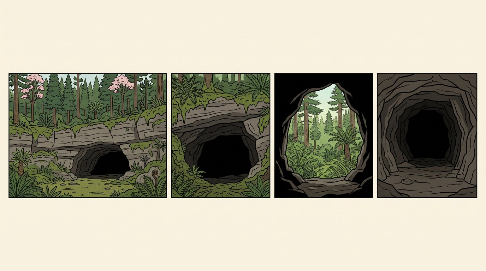
可以；洞口偏小。
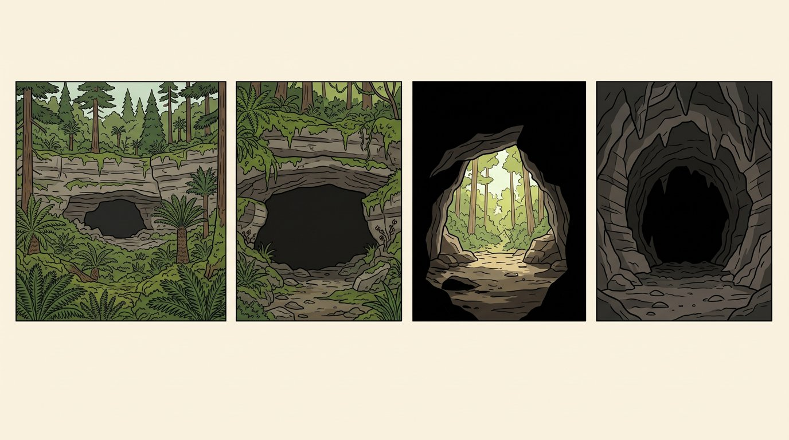
遠景洞口很小。
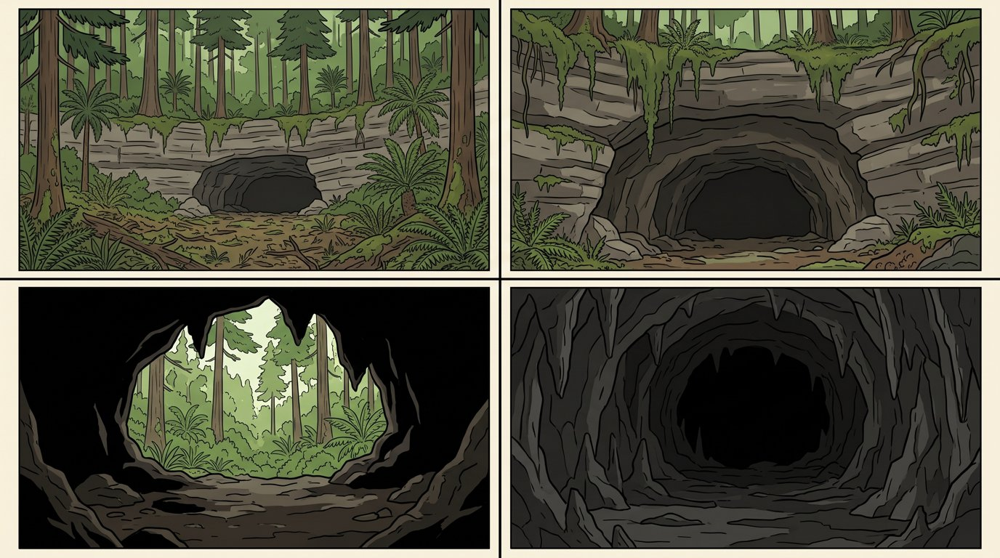
四格最清楚、最像照片。
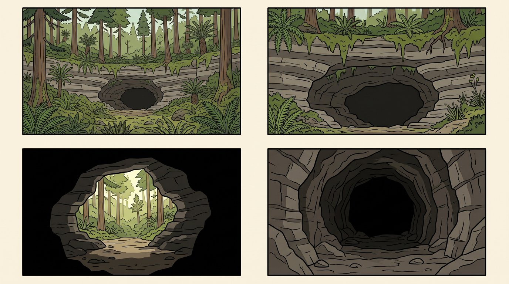
洞口偏橢圓、像隧道。
prompt（中文對照）
做一張 16:9 橫式地點設定圖，畫同一個大山洞，用在 2D 火柴人動畫（白堊紀末的北美洲森林）。附上的兩張照片是真的山洞入口，只參考岩壁和洞口的形狀；附上的小屋設定圖只參考畫風。畫風：扁平 2D 卡通、粗黑線、平塗色、不要寫實質感。山洞：平坦森林裡一道低矮、一層層的灰褐色岩壁，岩壁底部一個很寬的黑色洞口，寬約 8 公尺、高約 4 公尺，上緣有岩石懸垂；洞口周圍長著蕨類、苔蘚和小樹；岩壁後面是針葉樹和開花的樹。照片裡的欄杆、步道、樓梯、燈這些現代的東西全部不要畫。四格：1. 遠景：從森林往岩壁看，洞口在岩壁中間；2. 中景：洞口正面；3. 從洞裡往外看，漆黑的洞裡框著外面亮亮的森林；4. 洞的深處，一片漆黑往裡延伸、看不到底。白天、自然光。沒有人、動物、文字、標籤、logo、浮水印。
參考圖：PHOTO_CAVE_OUT、PHOTO_CAVE_IN、REF_HUT
高處土丘 REF_LOOKOUT
第 4 段 11 格：HERO 架相機、往北看山洞、往東看矮暴龍打三角龍、往南看撞擊亮光。
建議第 2 張：圓圓的低矮土丘、蕨類和灌木；往北看得到岩壁上的山洞（接得上山洞設定圖和地圖）、往東一片空地、往南平原到地平線；地面是蕨類不是草地（查核 #13）。
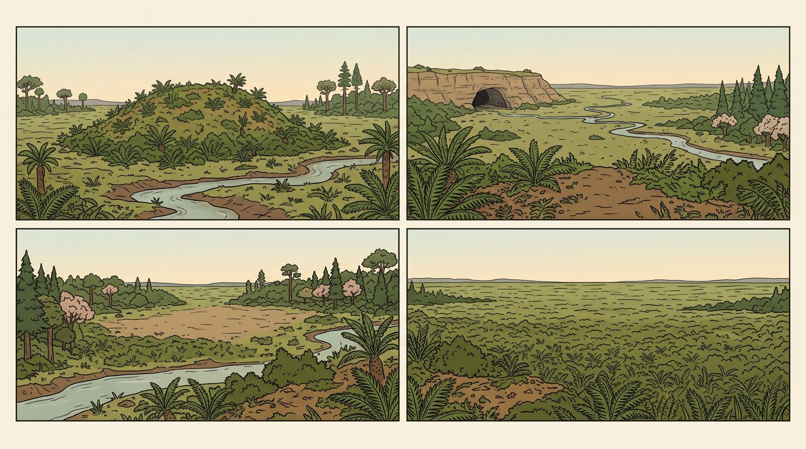
可以；跟第 2 張差不多。
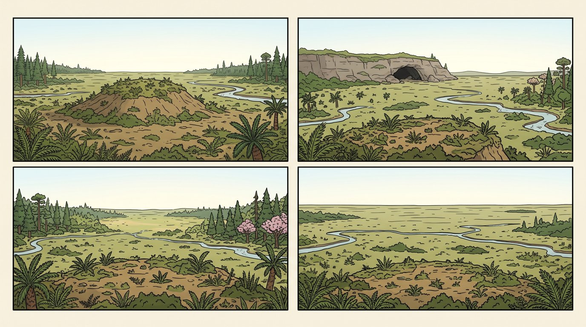
土丘最像、山洞最清楚。
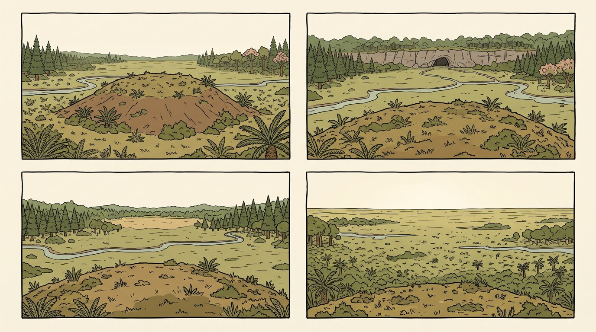
可以；山洞較小。
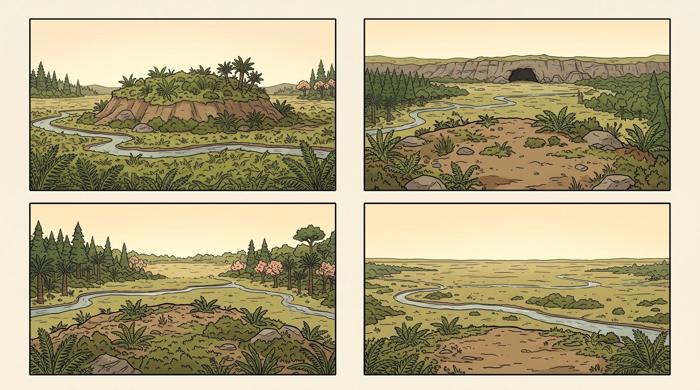
土丘四邊是陡壁，像台地。
prompt（中文對照）
做一張 16:9 橫式地點設定圖，畫同一個地方：白堊紀末北美洲（地獄溪）平坦的河邊平原上，唯一一個比較高的土丘，用在 2D 火柴人動畫。附上的小屋設定圖只參考畫風。畫風：扁平 2D 卡通、粗黑線、平塗色。土丘：約 40 公尺寬、10 公尺高，圓圓的，上面長著低矮的蕨類和灌木（那時候還沒有草原，不要畫草地）。四格：1. 從平原往上看土丘；2. 從丘頂往北看：遠方一道低矮的岩壁，中間一個黑色的大山洞；3. 從丘頂往東看：遠方一片空地；4. 從丘頂往南看：平坦的平原一直到地平線。周圍是平坦的平原、蕨類、低矮灌木，遠處有針葉樹和開花樹的森林、一條蜿蜒的小河。傍晚，天還很亮。沒有人、動物、文字、標籤、logo、浮水印。
參考圖：REF_HUT
學校餐廳 REF_CAFE
第 1 段 3 格：排隊、找不到學生證、刷卡機亮紅燈。
建議第 3 張：結帳台是有小螢幕的刷卡機（劇情要刷學生證），自助餐檯、長桌、大窗戶都有；招牌和螢幕空白、沒有字。
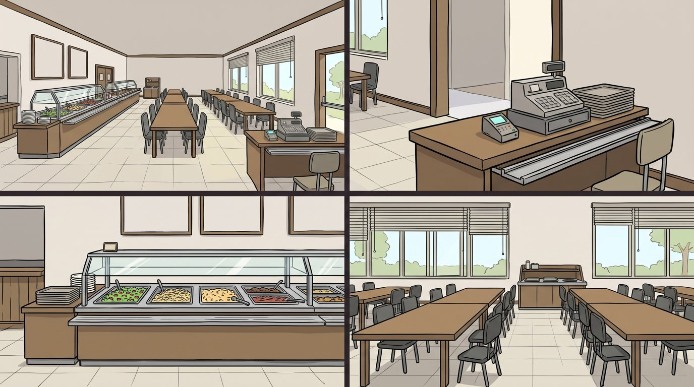
結帳台是舊式收銀機。
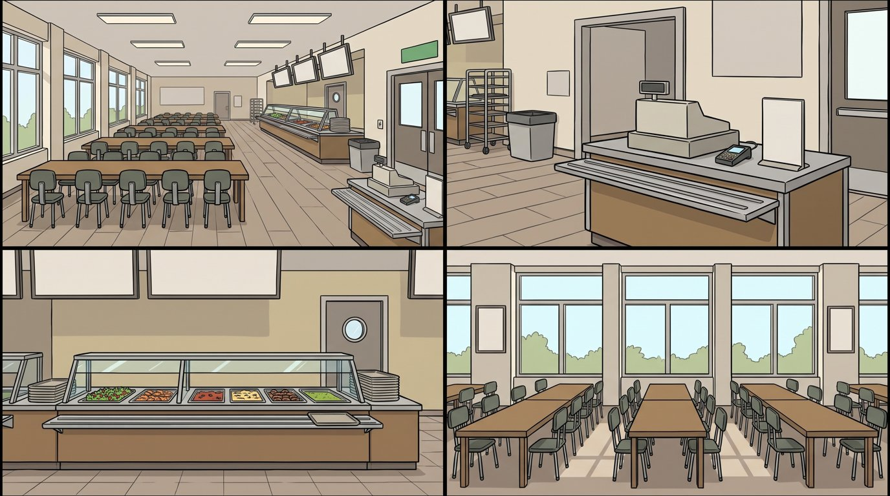
收銀機；牆上一條綠色牌子（空白）。
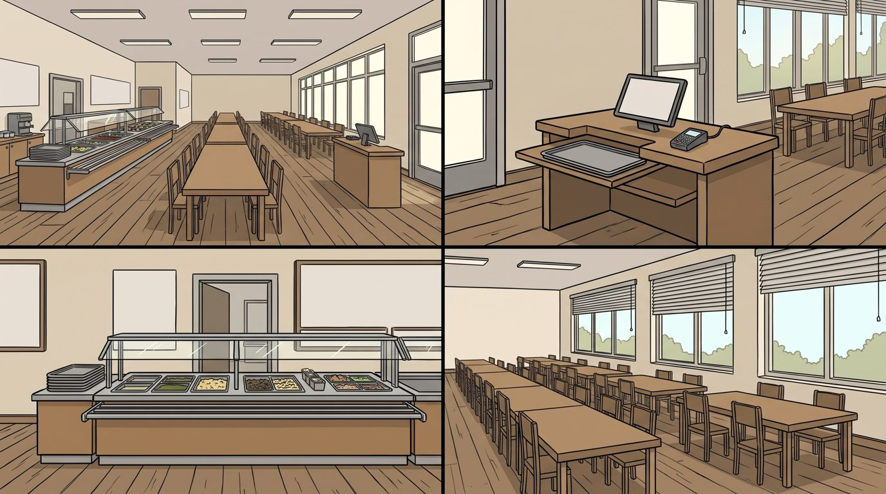
刷卡機最符合劇情；沒有字。
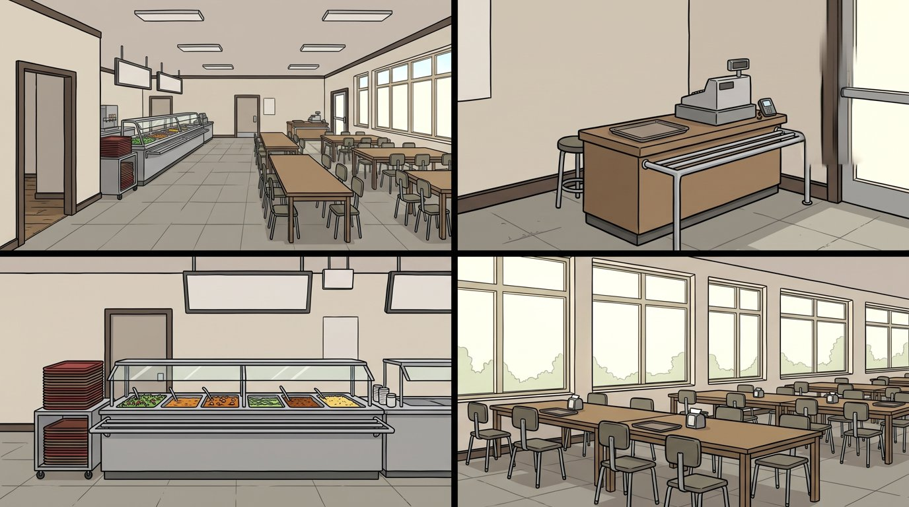
收銀機。
prompt（中文對照）
做一張 16:9 橫式地點設定圖，畫同一間大學學生餐廳，用在 2D 火柴人動畫。附上的房間牆面圖只參考畫風。畫風：扁平 2D 卡通、粗黑線、平塗色。餐廳：一面牆是一排長長的自助餐檯，上面放著一盤盤菜；靠出口有一個結帳台，台上一台刷卡機（只有一個小螢幕和亮燈，沒有字）；中間一排排長桌和椅子；另一面牆是大窗戶，中午的陽光照進來。四格：1. 從入口看整間餐廳；2. 結帳台和刷卡機近看；3. 自助餐檯正面；4. 長桌區和大窗戶。沒有人。招牌、菜單、價目表都不要有字；畫面任何地方都不要有文字、數字、logo、浮水印。
參考圖：ROOM_WINDOW_WALL